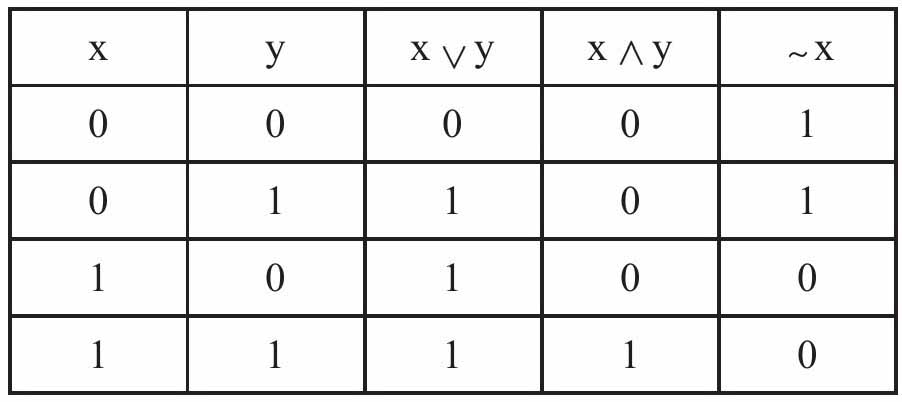
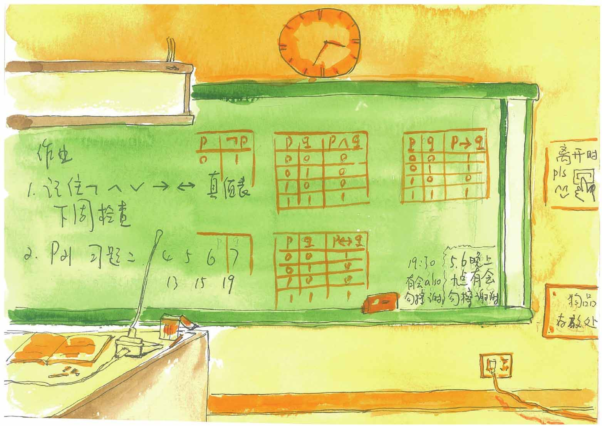

我们可以将一些“简单”命题经过一番组合，构造成一些更“复杂”的命题。
比如“2018年世界杯，巴西队没有小组出线”，其实是“2018年世界杯，巴西队小组出线”的否定形式。前者为“假”后者为“真”。显然真命题的否定是假命题，而假命题的否定是真命题。
对于大多数简单命题，很容易构造它们的否定命题。
看这个命题：今天是星期天，并且我在家休息。
这里，用到一个词“并且”将“今天是星期天”和“我在家休息”这两个命题连接起来构成一个新的命题。这个新的命题只在“我在家休息的星期天”为真，不是星期天命题为假，是星期天我不在家也为假。
再看这个命题：选修过英语或者法语的学生可以参加面试。
这里使用“或者”一词把“选修过英语的学生可以参加面试”和“选修过法语的学生可以参加面试”这两个简单命题连接起来。
哪些人可以参加面试呢？选修过英语和法语或者选修过其中一门的都可以参加面试。
小文，你看，我们可以使用“没有”“并且”“或者”这样的一些逻辑连接词，将一些“简单”命题构造成比较复杂的“新”命题，并且“新”的命题同样也可以断定真和假。
这里面是否有规律呢？
布尔思考了这个问题，他的想法是这样，可以把命题看作是运算对象，如同代数中的数字、字母和代数式，而把逻辑连接词看作运算符号，就像代数中的加、减、乘、除符号那样，那么简单命题组成复合命题的过程，也就是命题的演算过程。
布尔的思想被总结到他的一本名为《思维的规律》的书中，这本书的核心思想可以用下面这张表来表示。现在我们把这样的表叫逻辑运算的真值表（下表中∨表示“或者”，∧表示“并且”，～表示否定，1表示命题真值为真，0表示命题真值为假）：
逻辑运算真值表

现在，我们一般把“并且”构成的逻辑运算称为“与”运算，“或者”构成的逻辑运算称为“或”运算，把命题的否定称为“非”运算。
“与”“或”“非”运算是最常见的逻辑运算，逻辑运算时牢记逻辑运算的真值表是很重要的，其重要性如同算术运算的九九乘法口诀。
19世纪后期至20世纪初，皮尔斯（Charles Sanders Peirce）和其他的数学家拓展了布尔提出的基本逻辑运算：
或非（NOR）：命题p NOR q只在p和q都为假时为真，其他情况都为假。
与非（NAND）：命题p NAND q在p为假或q为假或两者均为假时为真，当p和q为真时为假。
命题p NOR q和命题p NAND q的符号表示分别是p↓q和p↑q。
运算符↓和↑分别以查尔斯·皮尔斯和谢佛（Henry M.Sheffer）的名字命名，称为皮尔斯箭头和谢佛竖（谢佛竖有的书标记为︱）。
